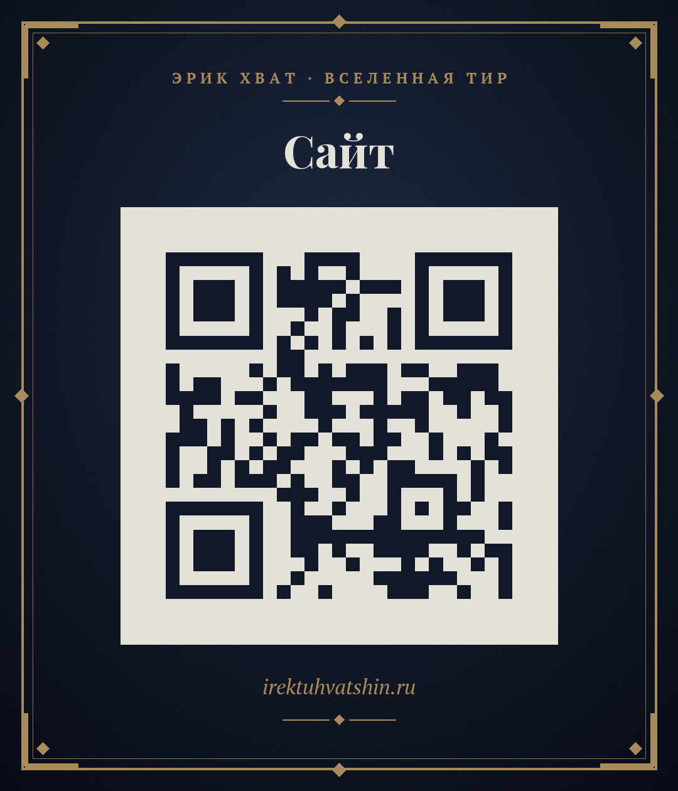
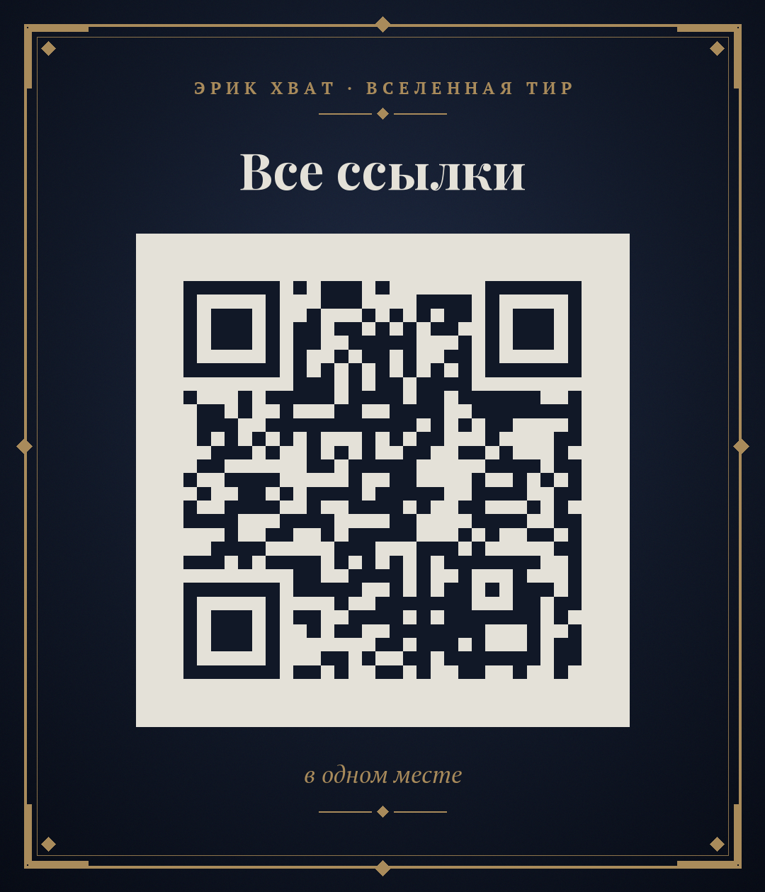
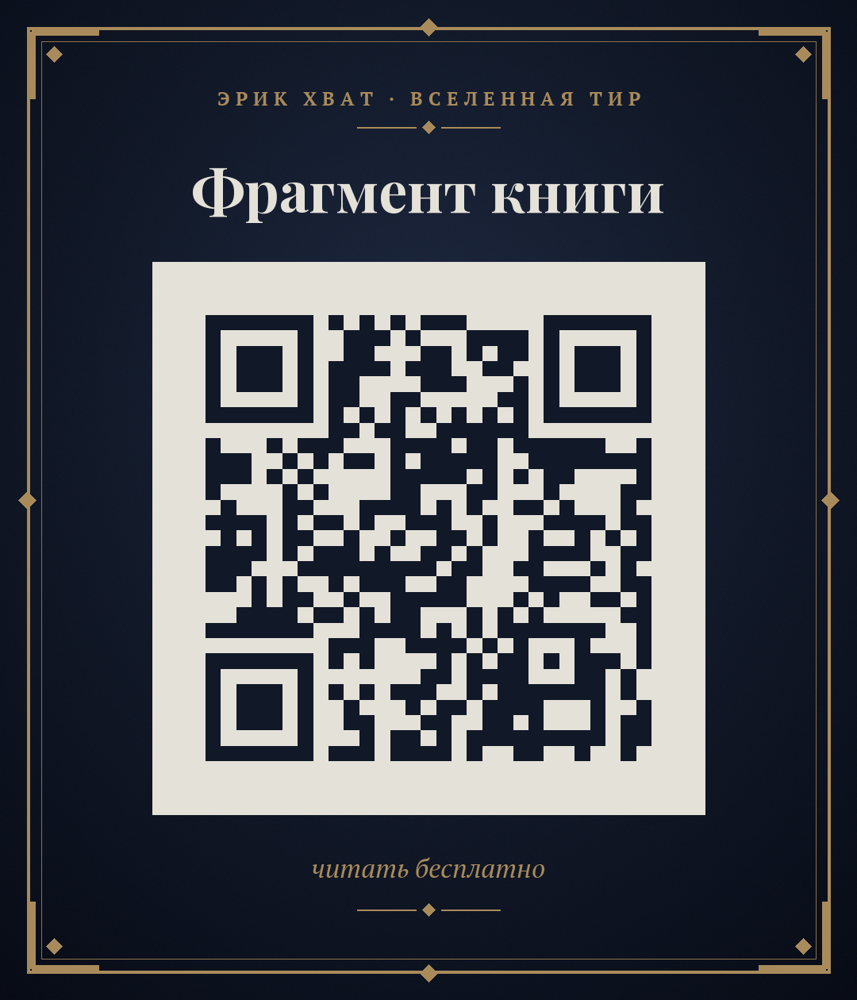
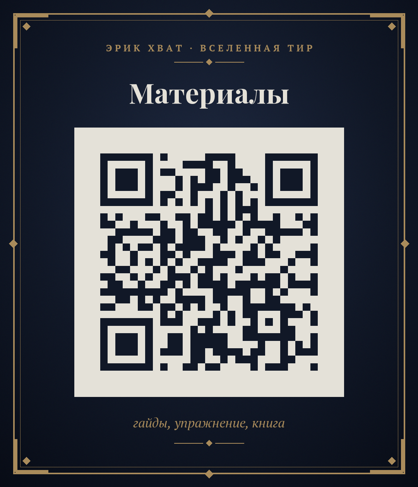
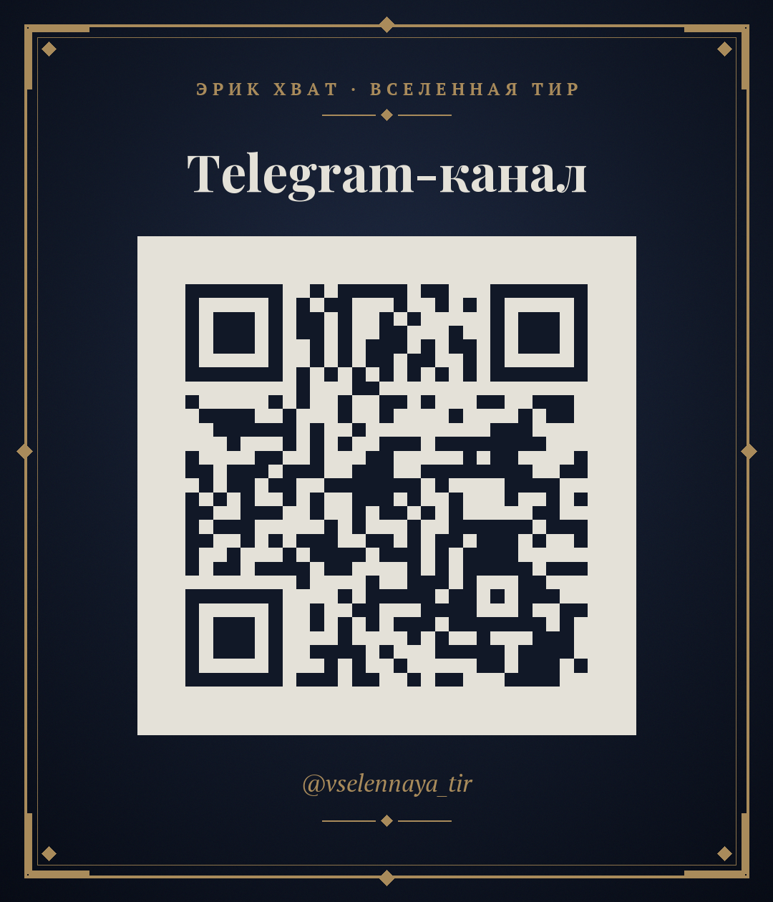
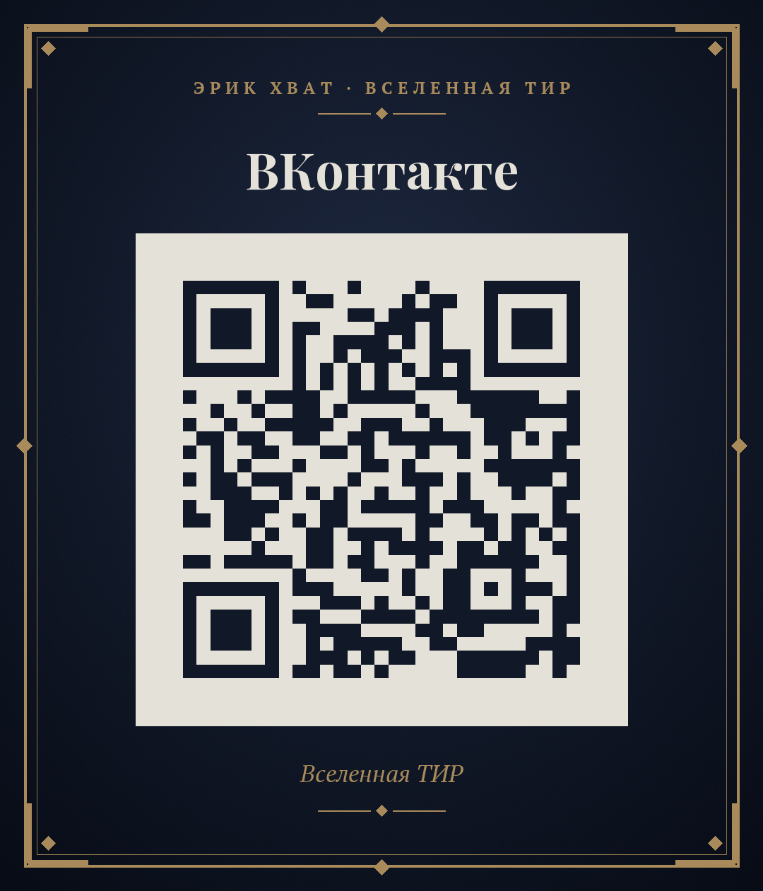
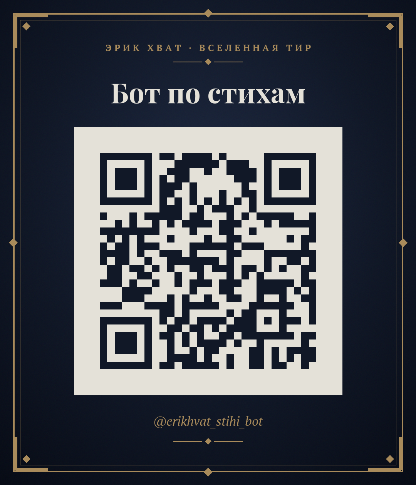
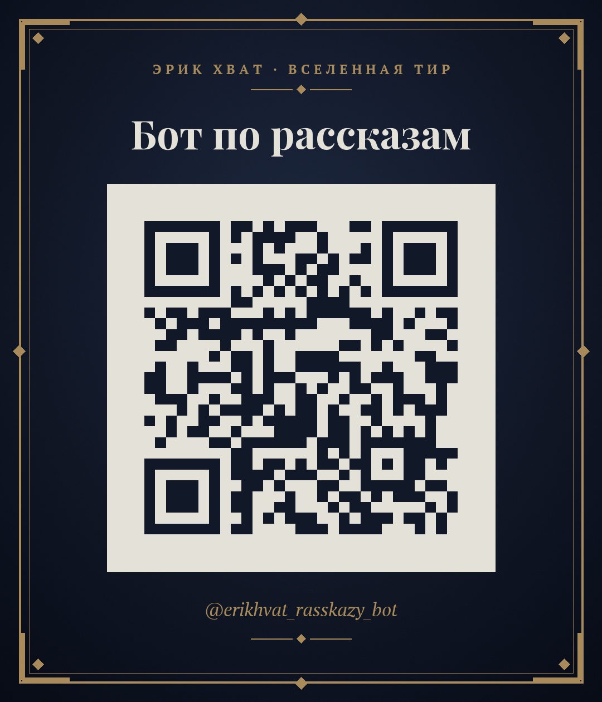
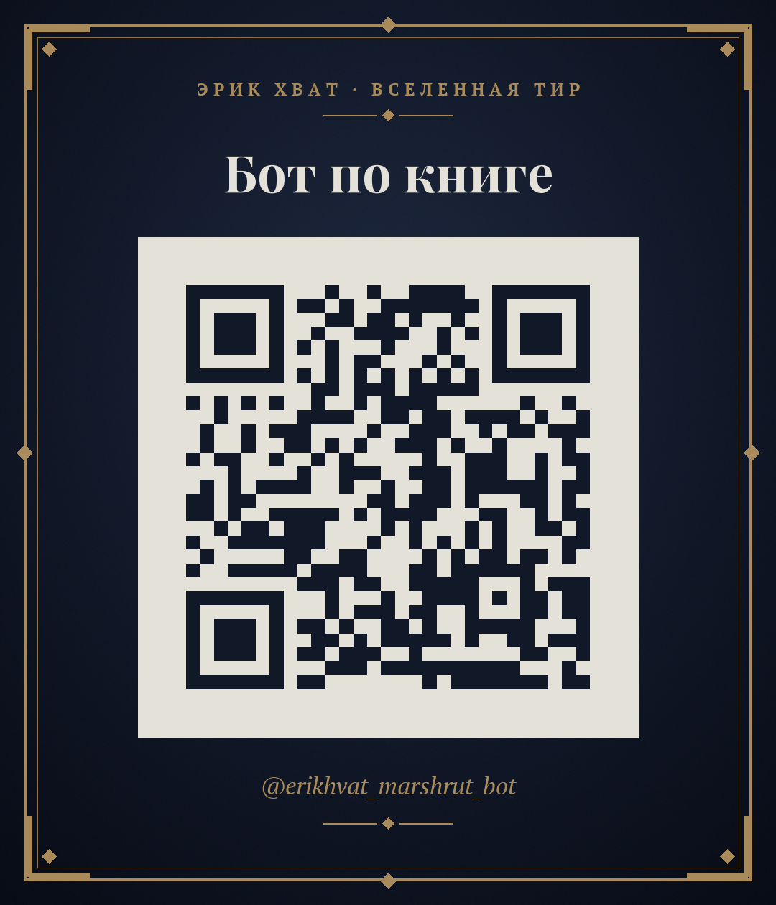

Сайт
http://irektuhvatshin.ru

Все ссылки
http://irektuhvatshin.ru/ssylki.html

Фрагмент книги
http://irektuhvatshin.ru/fragment.html

Материалы
http://irektuhvatshin.ru/oplata.html

Telegram-канал
https://t.me/vselennaya_tir

ВКонтакте
https://vk.ru/vselennaya_tir

Бот по стихам
https://t.me/erikhvat_stihi_bot

Бот по рассказам
https://t.me/erikhvat_rasskazy_bot

Бот по книге
https://t.me/erikhvat_marshrut_bot

Для печати лучше использовать «Простой QR»: на светлом фоне, без рамки. Размер на бумаге не меньше 3×3 см. Проверьте код камерой телефона перед тиражом.